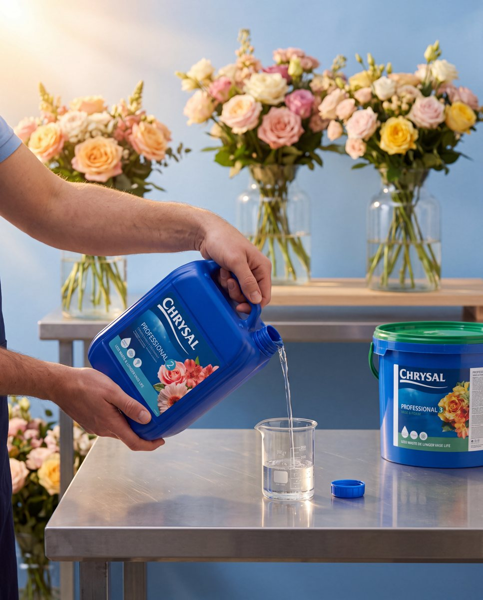

ПродуктГенерацияМонтаж
01
Chrysal
Видеокреатив · от идеи до монтажа
Видеокреатив для Chrysal — бренда средств для ухода за срезанными цветами. Показал профессиональную линейку в работе флориста: продукт в руках, свежие букеты и светлая мастерская. Полный цикл от идеи до монтажа.
- 01ИдеяРазобрал задачу бренда и придумал концепцию ролика под площадку и аудиторию.
- 02РеференсыСобрал мудборд: свет, цвет, настроение и ритм будущего видео.
- 03РаскадровкаРасписал сцены по кадрам, движение камеры и тайминг.
- 04ГенерацияСоздал кадры и видеосцены в нейросетях, удерживая единый стиль.
- 05МонтажСобрал ролик, выстроил ритм, сделал цветокоррекцию и титры.
- 06Звук и сдачаПодобрал звук, внёс правки клиента и сдал в нужных форматах.